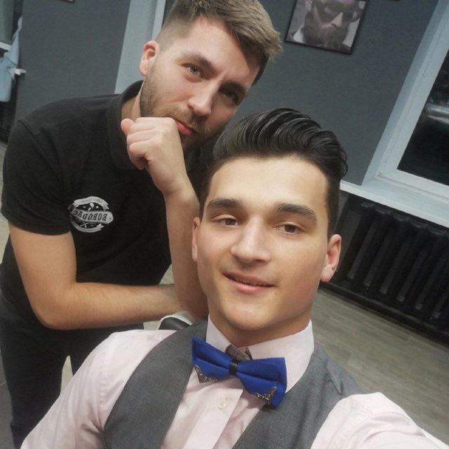

Я — full-stack разработчик, закончил университет имени Ф. Скорины. Занимаюсь созданием web-приложений, систем «Умный дом», работаю с микроконтроллерами, а также автоматизирую задачи с использованием Python и Telegram-ботов.
Умная система управления компьютером и RGB-лентами через голосовые команды. Реализована на ESP32/Arduino с интеграцией в Windows и Python-сервер
Система отслеживания присутствия с RFID и ESP32, управление через Telegram-бота, статус «дома/не дома» для каждого пользователя.
Интеграция OpenCV на Raspberry Pi 5, автоматическое реагирование системы на известных пользователей.